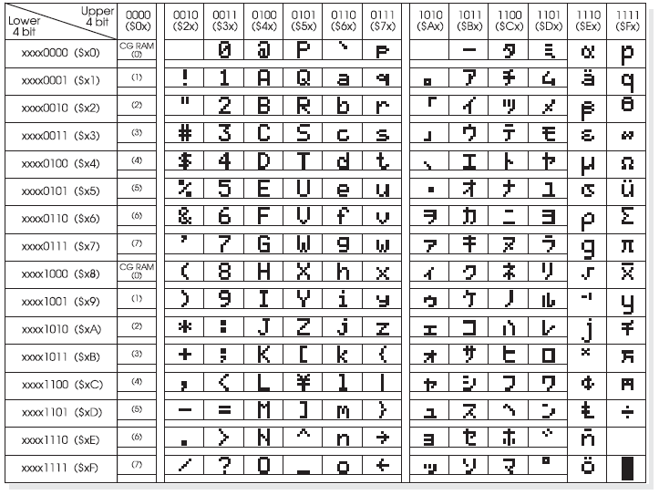

Das Display dient sowohl der Anzeige von Texten, als auch von Zeichen und Zahlen. Es besteht aus zwei Reihen mit jeweils 16 Zeichen.
Für die Ansteuerung des Displays wird für die echte Platine eine Hilfsdatei benötigt. Diese ist im Simulator bereits integriert und muss nicht manuell mit eingebunden werden.
Die Nummerierung der einzelnen Felder ist wie folgt festgelegt:
| Erste Zeile | 00 | 01 | 02 | 03 | 04 | 05 | 06 | 07 | 08 | 09 | 0A | 0B | 0C | 0D | 0E | 0F |
| Zweite Zeile | 40 | 41 | 42 | 43 | 44 | 45 | 46 | 47 | 48 | 49 | 4A | 4B | 4C | 4D | 4E | 4F |
Das Display kann manuell per Rechtsklick und "Display löschen" geleert werden.
Anzeigen von Text
Der Text muss in einer Tabelle abgelegt werden und diese mit der Ziffer 0 als letzten Eintrag abgeschlossen werden.
lcall initLCD
lcall loeschen
mov dptr, #text
lcall textzeile1
ende:
sjmp ende
text:
DB 'Example Text',0
Anzeigen von Zeichen
Das anzuzeigende Zeichen wird mithilfe dessen ASCII-Codes an das Display übertragen. Die entsprechenden Codes können der Tabelle entnommen werden. Zuerst wird das Zielfeld markiert und anschließend das Zeichen gesetzt. Folgendes Beispiel gibt einen Doppelpunkt an der 4. Stelle der 1. Zeile aus.
lcall initLCD
lcall loeschen
mov A, #03h
lcall cursorpos
mov A, #00111010b
lcall charaus
ende:
sjmp ende
Anzeigen von Ziffern
Das Zeilfeld wird markiert und die Ziffer direkt an das Display gesendet. Folgendes Beispiel gibt die Ziffer 5 an der 2. Stelle der 1. Zeile aus.
lcall initLCD
lcall loeschen
mov A, #01h
lcall cursorpos
mov A, #5
lcall zifferaus
ende:
sjmp ende
Zeichensatz-Tabelle
